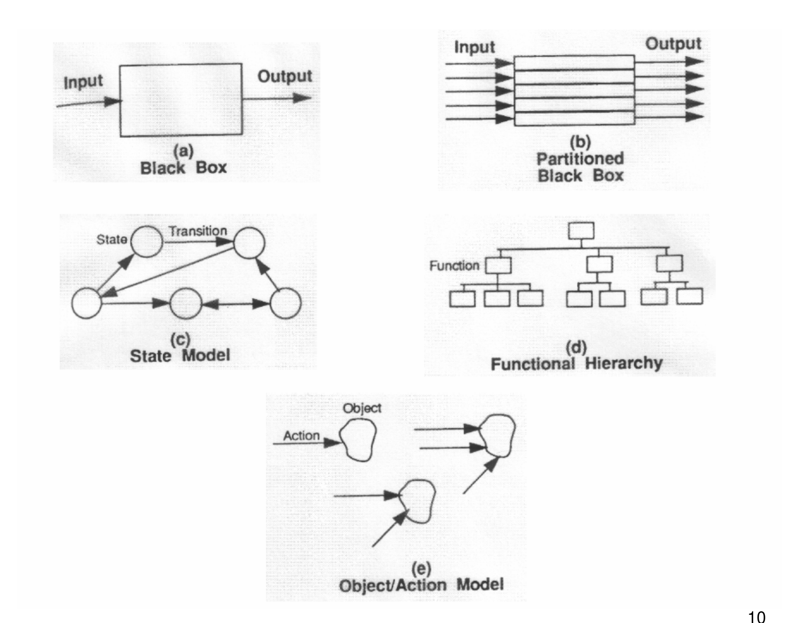
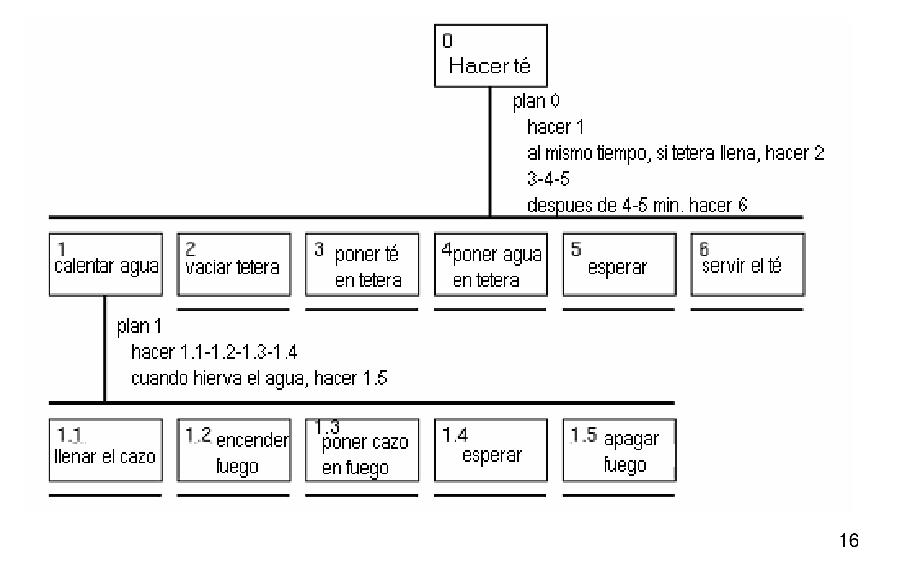

Diseño centrado en el usuario
Tema 4 de 7 Cuarto curso, 1.º cuatrimestre ≈ 9 min de lectura
Temas de IPO · 4/8
4.1 Introducción
En un sistema interactivo lo más importante es el diálogo con el usuario, así que la interfaz es fundamental y hay que pensarla desde el principio. Es lo que más determina la percepción e impresión que el usuario tiene de la aplicación, porque al usuario no le interesa su estructura interna, sino cómo usarla.
Además, una vez hecha la especificación, propuesto el diseño y escrito el código, es muy difícil cambiar la interacción y la presentación, salvo pequeños detalles. Por eso hay que empezar con una idea clara de cómo será la interfaz y las interacciones, y después desarrollar las especificaciones funcionales que guíen el diseño. Se pueden aplicar técnicas de ingeniería del software, pero adaptando algunos aspectos de los métodos clásicos a los sistemas interactivos.
Analogía: la casa y la distribución
Cambiar la interfaz al final es como querer mover la cocina cuando la casa ya está construida: se puede pintar o cambiar los muebles (pequeños detalles), pero no tirar tabiques. La distribución de las habitaciones (la interacción) se decide en los planos.
Para que el diseño satisfaga las demandas de los usuarios hay que analizar tres cosas: las características del usuario (físicas, cognitivas, culturales, sociales...), las actividades que realiza y cómo (lograr un objetivo implica hacer una serie de tareas en un orden), y el escenario físico y social donde las realiza. Y el diseño debe basarse en criterios consistentes fruto de la experiencia, no en juicios intuitivos: principios generales de diseño, guías, estándares... (que se ven en el tema 5).
4.2 Modelo conceptual
Hay que distinguir dos modelos:
| Modelo conceptual | Modelo mental | |
|---|---|---|
| Qué es | Abstracción externa que describe lo que el usuario debería saber del sistema | Abstracción del conocimiento interno que realmente tiene el usuario |
| Quién lo hace | El diseñador, con diagramas y descripciones, usando métodos formales | Se forma en la cabeza del usuario (ver tema 2) |
| Cómo es | Busca completitud, consistencia y exactitud | Refleja lo que el usuario piensa y sabe, guía sus intenciones y cambia con la interacción |
El modelo conceptual informa al usuario de qué hace el sistema y con qué mecanismos, y debe favorecer el aprendizaje y que el usuario desarrolle estrategias para resolver problemas. Para ello debe ser asimilable (usar conceptos familiares), consistente (coherente) y simple (al alcance de un usuario medio). La meta es que el modelo mental del usuario se parezca lo más posible al conceptual.
Analogía: la papelera
El modelo conceptual de "borrar un archivo" en un escritorio es una papelera: algo familiar (asimilable), que funciona siempre igual (consistente) y fácil de entender (simple). El usuario no necesita saber cómo se liberan los bloques del disco; le basta saber que lo tirado se puede recuperar hasta que se vacía.
Hay varios modelos de descripción conceptual:
| Modelo | Cómo ve el usuario el sistema |
|---|---|
| (a) Caja negra | Desconoce por completo su funcionamiento interno: solo ve entradas y salidas |
| (b) Caja negra particionada | Varias cajas negras: entradas y salidas separadas por función |
| (c) Basado en estados | Un conjunto de estados; las transiciones las provocan eventos bien definidos y el usuario observa los cambios |
| (d) Funcional jerárquico | Las funciones se agrupan en jerarquías, partiendo el problema para reducir la complejidad |
| (e) Basado en objetos y acciones | Se trabaja directamente con entidades (físicas o abstractas) sobre las que se hacen acciones; el usuario conoce los objetos, sus atributos y acciones |

(a) caja negra, (b) caja negra particionada, (c) modelo de estados, (d) jerarquía funcional y (e) modelo objeto/acción.El texto de la diapositiva enumera cuatro modelos (caja negra, funcional jerárquico, estados y objetos-acciones); la figura añade la caja negra particionada.
4.3 Análisis de tareas: HTA
4.3.1 Análisis de tareas
El análisis de tareas parte del conocimiento del usuario y de las tareas que realiza, y recoge la información con una notación que permita formalizarla. Usa tres conceptos:
- Tarea: unidad significativa de trabajo de una persona (sobre una aplicación) para conseguir un objetivo. Se descompone en acciones.
- Acción: cada uno de los pasos para hacer una tarea.
- Objetivo: el estado que el usuario quiere alcanzar.
Sus beneficios son que da un diseño consistente con el modelo mental del usuario y que facilita evaluar la usabilidad, permitiendo predecir el rendimiento e identificar problemas de uso.
Definición: es el proceso de analizar cómo las personas hacen su trabajo: qué hacen, sobre qué cosas actúan y qué necesitan saber. En concreto estudia la información que necesita el usuario para la tarea (qué hacer), la terminología y los símbolos del dominio (elementos) y cómo se hacen actualmente las tareas (cómo).
El resultado es una lista de tareas relevantes con información adicional (atributos, restricciones...), relacionada con conceptos como el modelo de diálogo persona-ordenador, el modelo de tareas, el dominio del sistema, el modelo de usuarios y las propiedades del sistema (seguridad, robustez...).
Hay tres métodos:
| Método | En qué se centra |
|---|---|
| Descomposición de tareas | Dividir las tareas en una jerarquía de subtareas (como HTA) |
| Análisis basado en conocimiento | Qué conocimiento necesita el usuario para la tarea y cómo lo tiene organizado |
| Análisis de relaciones entre entidades | Enfoque orientado a objetos: actores, objetos, sus relaciones y sus acciones |
4.3.2 Análisis jerárquico de tareas (HTA)
El HTA (Hierarchical Task Analysis) describe las tareas en términos de operaciones y planes. Una operación es una actividad a realizar para alcanzar un objetivo, y se descompone jerárquicamente en suboperaciones. Un plan es el conjunto de condiciones que deben darse al realizar una operación: indica en qué orden y cuándo se hacen sus suboperaciones.
Las ramas del árbol pueden ser de cuatro tipos:
| Tipo | Significado |
|---|---|
| Secuencia | Tareas que se hacen en un orden temporal fijo |
| Selección | Se elige una tarea de un conjunto |
| Iteración | Un conjunto de tareas se repite |
| Tarea unitaria | Actividad indivisible (una hoja del árbol) |
El ejemplo de la diapositiva es hacer té:

0. Hacer té
Plan 0: hacer 1; al mismo tiempo, si la tetera está llena, hacer 2;
3-4-5; después de 4-5 minutos, hacer 6
1. Calentar agua
Plan 1: hacer 1.1-1.2-1.3-1.4; cuando hierva el agua, hacer 1.5
1.1 Llenar el cazo
1.2 Encender el fuego
1.3 Poner el cazo en el fuego
1.4 Esperar
1.5 Apagar el fuego
2. Vaciar la tetera
3. Poner el té en la tetera
4. Poner agua en la tetera
5. Esperar
6. Servir el té
En el ejemplo aparecen los cuatro tipos: el plan 1 es una secuencia (1.1 → 1.4); "si la tetera está llena, hacer 2" es una selección (solo se hace si se cumple la condición); "esperar hasta que hierva" implica una iteración (seguir esperando mientras no hierva); y cada caja final, como "llenar el cazo", es una tarea unitaria.
Para entenderlo mejor
HCI: Hierarchical Task Analysis (HTA) Model with Examples — cómo construir un árbol de HTA con sus planes, con varios ejemplos (vídeo, 8:40, inglés).
4.4 Modelo objeto-acción
Se trabaja con objetos físicos o conceptuales sobre los que se ejecutan acciones, sin indicar cómo se van a realizar esas acciones. Casi todo el software reciente para ordenadores personales se basa en este modelo (seleccionas un archivo y luego eliges qué hacer con él).
Sus aportaciones son una representación visual del sistema, sencilla y fácil de aprender y manipular, y modelos sencillos de sistemas complejos, con mucha flexibilidad para mejoras y cambios futuros. Su modelo de diálogo tiene dos partes: un conjunto de objetos que representan elementos de información y las acciones que el usuario puede hacer sobre ellos.
Lenguajes de órdenes para manipular objetos:
- Seleccionar / deseleccionar un objeto.
- Buscar / identificar un objeto.
- Crear / eliminar objetos.
- Mover / copiar objetos.
- Obtener / cambiar los valores de sus atributos.
- Visualizar el objeto.
Diálogos modales. Un modo es un estado (o conjunto de estados) en el que se puede realizar un determinado conjunto de tareas. Por ejemplo: un estado en el que unas órdenes solo se aplican al objeto seleccionado; uno en el que hay que completar un cuadro de diálogo antes de hacer otra cosa (una ventana modal, como "¿Guardar cambios?"), o uno en el que se usa un programa externo para modificar un objeto (un gráfico, un diagrama...).
Analogía: el modo del bolígrafo
Un bolígrafo de cuatro colores tiene "modos": según el que pulses, todo lo que escribes sale de ese color. Es útil, pero si olvidas en qué modo estás, te equivocas. Por eso una ventana modal bloquea todo lo demás hasta que respondes: deja claro en qué modo estás.
4.5 Implementación
Una vez modeladas las tareas, hay que implementarlas correctamente, teniendo en cuenta:
- Los tipos de interacción: posicionamiento, valor, texto, selección, arrastre...
- Los principios, guías de estilo y estándares.
- La gestión de las entradas del usuario: por petición (el programa espera a que el usuario introduzca algo), por muestreo (lee periódicamente el estado del dispositivo) o por evento (reacciona cuando el usuario hace algo).
- El diseño de la presentación.
- La gestión de errores.
4.6 Ideas clave
- La interfaz se piensa desde el principio: cambiarla al final es muy difícil. Analizar usuario, tareas y escenario; diseñar con criterios basados en la experiencia (principios, guías, estándares).
- Modelo conceptual (externo, lo diseña el diseñador; completo, consistente, exacto) vs modelo mental (interno, del usuario). El conceptual debe ser asimilable, consistente y simple.
- Modelos de descripción: caja negra, funcional jerárquico, basado en estados, objetos y acciones.
- Análisis de tareas: tarea (unidad de trabajo), acción (paso), objetivo (estado deseado); qué hacen, sobre qué actúan, qué necesitan saber. Métodos: descomposición, basado en conocimiento, relaciones entre entidades.
- HTA: operaciones (jerárquicas) + planes (condiciones y orden); ramas de secuencia, selección, iteración y tarea unitaria (ejemplo: hacer té).
- Modelo objeto-acción: objetos + acciones (seleccionar, buscar, crear, mover, cambiar atributos, visualizar); diálogos modales (ventana modal).
- Implementación: tipos de interacción, estándares, gestión de entradas (petición, muestreo, evento), presentación y errores.